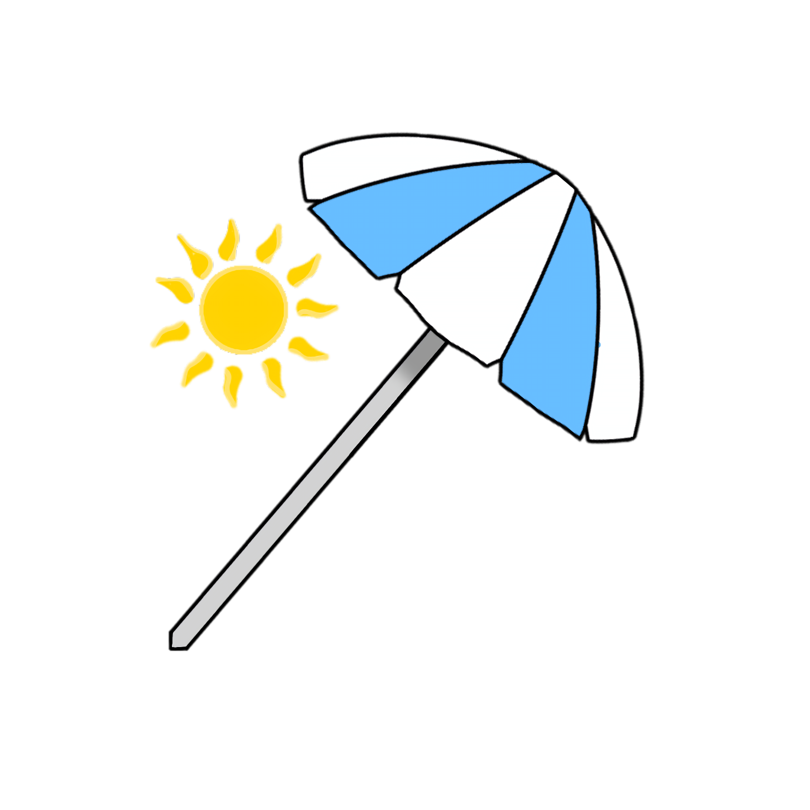

PARASOL
Viagens

Sobre Nós
A Parasol nasceu de uma tradição familiar e do amor por conectar pessoas a momentos inesquecíveis. Nossa história começou com o avô do atual proprietário, que deu os primeiros passos no ramo de viagens, sempre valorizando a confiança, o cuidado com os passageiros e a alegria de viajar. Anos depois, a empresa passou para seu pai, que manteve vivo esse legado e ajudou a Parasol a se tornar uma referência de atendimento próximo e familiar.
Hoje, a Parasol continua essa trajetória sob o comando da nova geração, preservando os mesmos valores que acompanharam a empresa desde o início: segurança, responsabilidade, conforto e atendimento de qualidade.
Neste momento, nossa especialidade é oferecer viagens de ônibus para Cabo Frio, proporcionando aos clientes uma forma prática, econômica e confortável de aproveitar um dos destinos mais queridos do litoral brasileiro.
Acreditamos que cada viagem é mais do que um deslocamento: é a oportunidade de criar memórias, descansar, conhecer novos lugares e compartilhar bons momentos. E é justamente isso que a Parasol busca entregar em cada embarque.